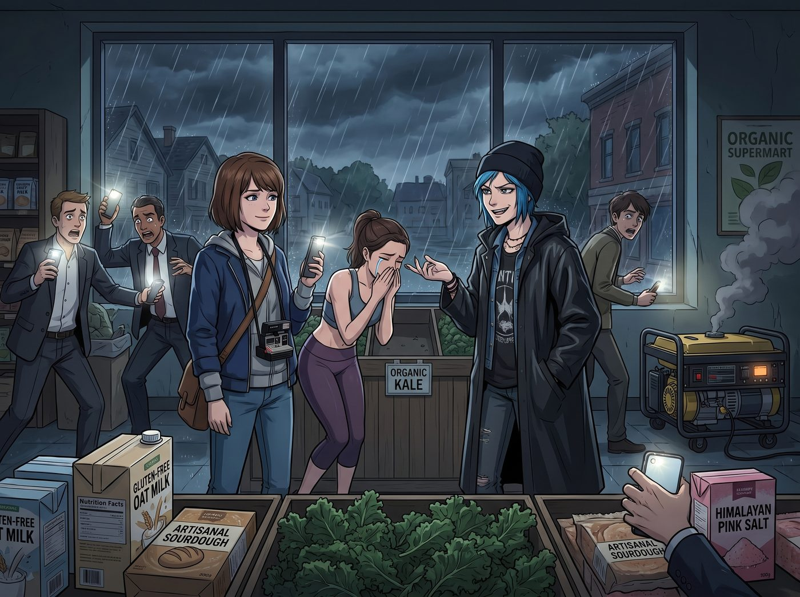
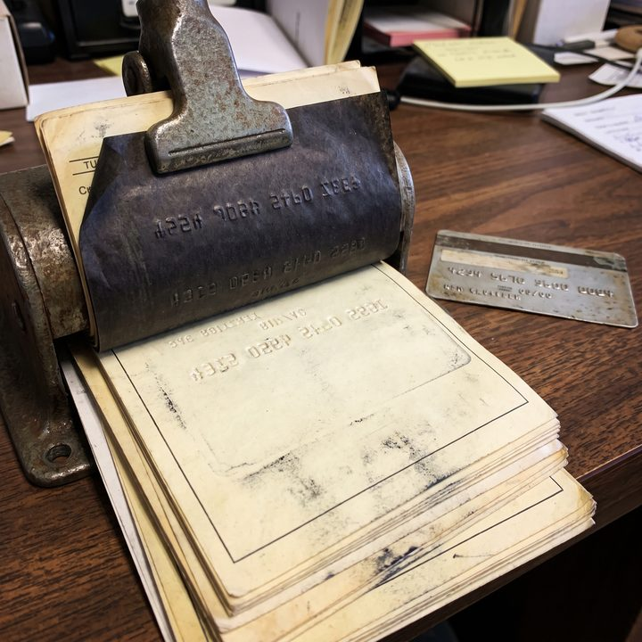

指節殺手


當 Ford Raptor 皮卡車在狂風暴雨中駛入半島上最大的鎮中心時，Max 原本以為會看到好萊塢災難電影裡那種砸碎玻璃、哄搶物資的末日景象。但現實是，太平洋西北地區的「停電恐慌」，呈現出了一種極度荒謬的中產階級悲喜劇。
鎮上並沒有暴徒，只有一群因為失去了現代便利設施而陷入集體焦慮的體面人。
小鎮唯一的有機連鎖超市裡，備用柴油發電機發出令人不安的咳嗽聲，只能勉強維持著幾盞昏暗的應急燈和冷藏櫃的最低運作。沒有人搶奪罐頭或飲用水，恐慌的當地居民們正藉著手機手電筒的微光，在貨架前瘋狂囤積著無麩質燕麥奶、手工酸種麵包和喜馬拉雅粉紅鹽。
「這簡直是對『末日求生』這個詞的侮辱。」Chloe 披著防水雨衣，看著一個穿著瑜伽服的女人因為搶不到最後一盒有機羽衣甘藍而默默流淚，發出了無情的嘲笑。
一、支付系統的崩潰
真正讓超市陷入癱瘓的，不是物資短缺，而是支付系統的崩潰。
收銀台前排起了長達五十公尺的隊伍，充滿了絕望的嘆息聲。因為鎮上的網路通訊塔斷電，超市那套依賴雲端的先進 POS 收銀系統徹底死機。收銀員只能無奈地舉著一塊紙板，上面用馬克筆寫著：「僅限現金，不設找零」。
但在這個早已習慣了行動支付和非接觸式信用卡的數位時代，誰出門還會帶厚厚一疊現金？
當小分隊推著裝滿了衛生紙、幾打啤酒以及 Kate 需要的特級高筋麵粉的手推車來到收銀台時，Victoria 習慣性地從愛馬仕包包裡抽出一張黑卡，卻被滿頭大汗的店長伸手擋住。
「抱歉，女士，系統癱瘓了，刷卡機沒有信號。我們現在只能收現金。」店長疲憊地解釋。
「你是在跟我開玩笑嗎？」Victoria 難以置信地看著店長，名媛的脾氣在潮濕和停電的雙重折磨下瀕臨爆發。
二、被遺忘的古董
眼看 Victoria 就要把黑卡砸在店長臉上，一旁的 Lily 卻若有所思地推了推圓框眼鏡。
「店長先生，貴店開業應該有些年頭了吧？」Lily 溫和地問道，「像這種老字號的獨立超市，收銀台底下通常都會留有一台備用的手動壓卡機，用來應對這種網路中斷的緊急狀況。您要不要找找看？」
店長愣了一下，努力回想著：「壓卡機……好像是有這麼一回事，我爺爺那輩開店的時候提過……」他蹲下身，在收銀台最底層積滿灰塵的抽屜裡翻找起來。兩分鐘後，他竟然真的翻出了一台造型古樸的手搖式金屬機器，表面刻著早已褪色的品牌浮雕，旁邊還散落著幾張泛黃的複寫紙。
站在一旁的 Max，目光瞬間被那台蒙塵的鐵盒吸引住了。她的眼睛亮了起來，那種她看到老式相機或黑膠唱片時才會有的興奮感，毫無預兆地湧了上來。
「這是……壓卡機？」Max 忍不住湊近，伸手碰了碰那個冰冷的金屬滾輪，「我只在收藏雜誌上見過這種東西的照片！」
「能讓我試試看嗎？」Max 的語氣裡帶著一種近乎虔誠的期待。
店長把那台鏽跡斑斑的機器和一疊複寫紙遞了過來。Max 小心翼翼地把 Victoria 的黑卡放進凹槽，深吸一口氣，握住手柄，用力一壓——
「喀啦、喀啦。」
一陣清脆而扎實的機械摩擦聲響起，卡片上凸起的數字被完美地印在了複寫紙上，留下一道帶著歷史質感的浮雕痕跡。
「天哪……」Max 捧著那張簽購單，眼睛裡閃著光，「這比任何數位收據都要有溫度。妳看，這道壓痕是真實存在的，不是螢幕上一堆會消失的像素。」
Lily 又輕聲補了一句：「順帶一提，這種離線交易在信用卡公司的特約條款裡是受保護的，只要七十二小時內上傳批次檔就完全合規，店長先生不用擔心事後被追責。」
店長這才鬆了一口氣，感激地看了 Lily 一眼。
三、簽名與收穫
「請簽名。」Max 笑著把筆遞給 Victoria，語氣裡帶著少見的興奮，完全忘了名媛剛才的怒氣。
Victoria 沒好氣地瞪了她一眼，但看著 Max 難得如此雀躍的表情，還是配合地簽下了自己的名字。
在全超市幾百個因為沒有現金而餓著肚子排隊的當地居民震驚的目光中，這台意外重見天日的古董機器，成了整間超市裡唯一還能正常運作的收銀設備。
「幹得漂亮。」Chloe 吹了一聲口哨，直接扛起那箱啤酒，大搖大擺地朝超市大門走去。
當她們推著滿載而歸的購物車走出超市，重新回到風雨交加的街道時，Max 依然小心翼翼地把那張簽購單收進口袋，像收藏一件真正的寶物。
「Max，妳今天看起來比拿到限量版底片還開心。」Kate 撐開一把大傘，笑著問道。
「因為這證明了，」Max 抬頭望著漆黑的天空，眼底帶著溫柔的堅定，「有些東西不會因為沒有電、沒有網路就停止運作。真正可靠的東西，從來都刻在實體上，不需要任何雲端。」
就這樣，在整個小鎮依然陷入斷網斷電的原始恐慌時，二號車廂的小分隊帶著充足的物資、以及 Max 那張意外收穫的復古紀念品，坐上皮卡，朝著她們那個溫暖如春的家駛去。